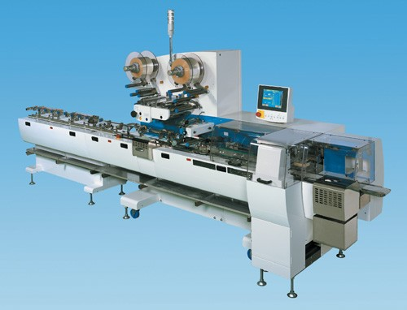

KBF-1000型 高速横ピロー包装機（BOXモーション機構）

機能と特徴
■
安定した高速密封シールでさらに低振動
最高250rpmでの高速密封シールが可能で、機械振動も半減させました。
■
簡単カッター脱着
カッターの脱着が簡単におこなえます。
■
簡単エンドシーラ清掃
搬送ベルトが開閉できるので、下側エンドシーラも簡単に清掃できます。
オプション
■
高感度のエンド噛み込み検出
低振動化の実現により、さらに高感度のエンドシーラ噛み込み検出が可能となりました。
■
ガセット装置
ガセット折込み形態にも対応できるよう、ガセット装置も取付け可能です。
包装対象品
■
使用例
チョコレート、クッキー、ビスケット、サブレ、せんべい、あられ、ラムネ、その他小物製品
仕様
シリーズ・
機種名
正勝手
（左から右流れ）
KBF-1011
逆勝手
（右から左流れ）
KBF-1111
包装能力（注1）
MAX250rpm
袋寸法
袋長さ
MIN70mm
折径
30〜85mm
巻取紙寸法
幅
80〜200mm
巻取径
MAX350mm
製品寸法
幅
MAX70mm
高さ
MAX30mm
使用電力
4KW
エアー消費量
約150NL/min（0.5Mpa,250rpm時）
機械寸法（注2）
4,594mm（長さ）×1,020mm（幅）×1,730mm（高さ）
標準装備
オートスプライサ（自動紙繋ぎ装置）、
上抑えコンベア、絞りローラ
パネルコンピュータ（10インチ）、
自動供給コンベア
オプション
フルパック（無駄紙防止機能）、日付装置、
空袋除去装置、エンド噛み込み検出、
ガセット装置
（注1）包装能力は製品の形状や性質・フィルムの材料等により
異なりますので、必ず弊社までお問い合わせください。
（注2）機械寸法には機械本体のほかに自動供給コンベヤも
含まれおります。
HOMEへ戻る
Copyright (C) KAWASHIMA PACKAGING MACHINERY CO.,LTD. All Rights Reserved.